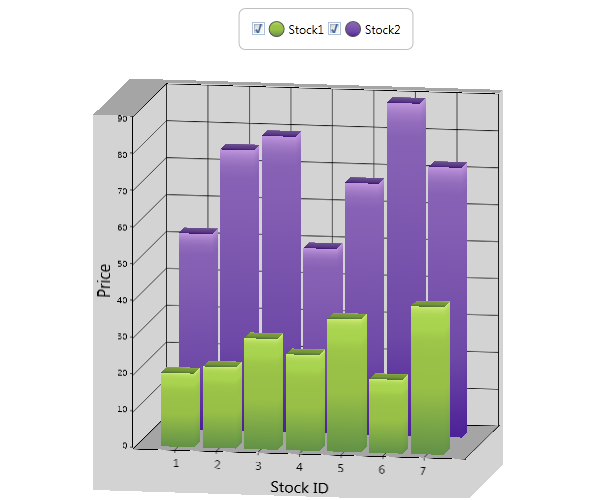

Features
3D Manhattan Chart is a three dimensional charting feature that enables the chart control to visualize data in a three dimensional space (i.e. along the X, Y a, and Z axes). The feature supports basic Chart Types like Column, Bar, Line and Area, and helps the user to plot graphs in the third axis (Z axis), apart from X and Y axes, which already are supported in Chart.
Use Case Scenarios
· You can avail of 3D Manhattan bar support by using the IsClustered property, when IsClustered is set to false. Each series is plotted in value of Z Axis, whereas Clustered view has series added to only X Axis
· You can plot various fields in a chart, using the 3D Manhattan Chart, in a more comprehensive manner, as shown in the following example:

Figure 261: 3D Manhattan Chart
Here, the number of working days and wages of the employee in X, Y and Z axes are plotted correspondingly.
Properties
Table 172: Properties Table
|
Property |
Description |
Type |
Data Type |
Reference links |
|
IsClustered |
To cluster the series along X axis when isClustered is set to true. |
Dependency Property. |
Boolean |
NA |
|
IsRotated |
To allow the 3D Chart to rotate |
Dependency Property |
Boolean |
NA |
Sample Link
To view samples:
1. Open the WPF Sample Browser from the dashboard.
2. Navigate to WPF Chart -> Chart Area -> 3D Manhattan Chart.
Adding 3D Manhattan Bar Chart to an Application
|
[xaml] <sync:Chart x:Name="Chart1" > <sync:ChartArea IsClustered="True"> <sync:ChartSeries x:Name="series1"/> </sync:ChartArea> </sync:Chart> |
|
[C#] Chart1.Areas[0].IsClustered = true; |